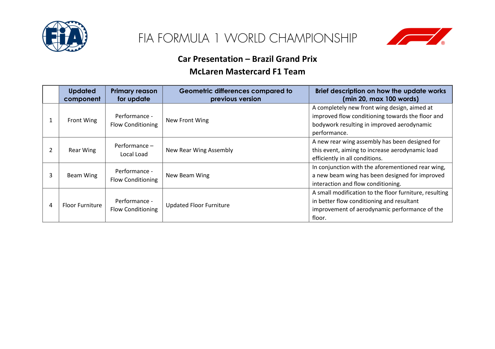
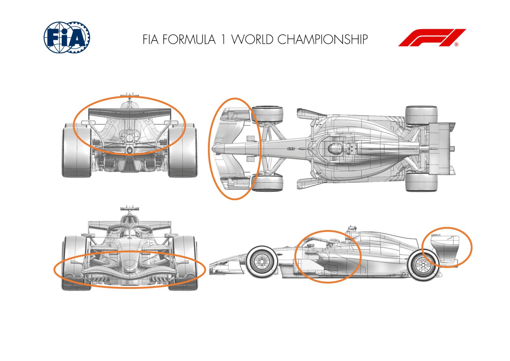
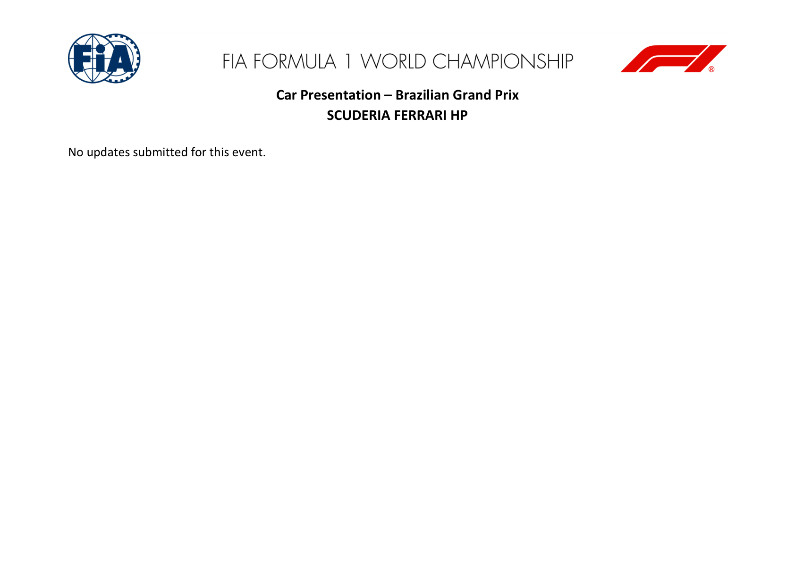
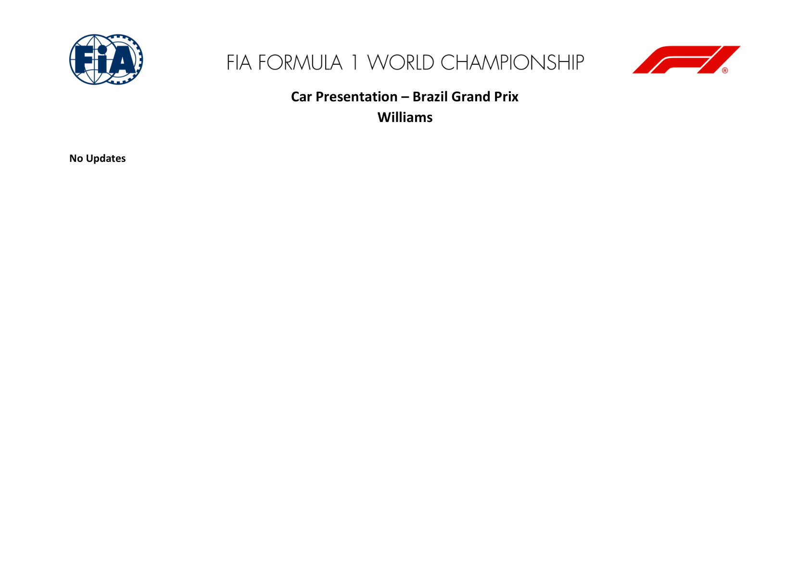
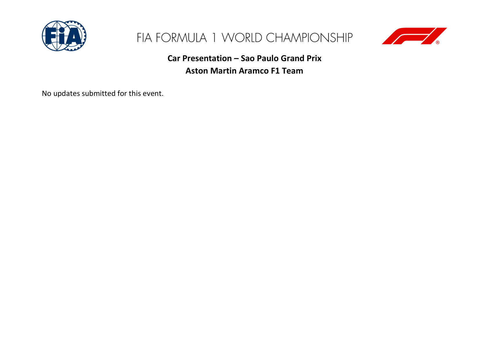
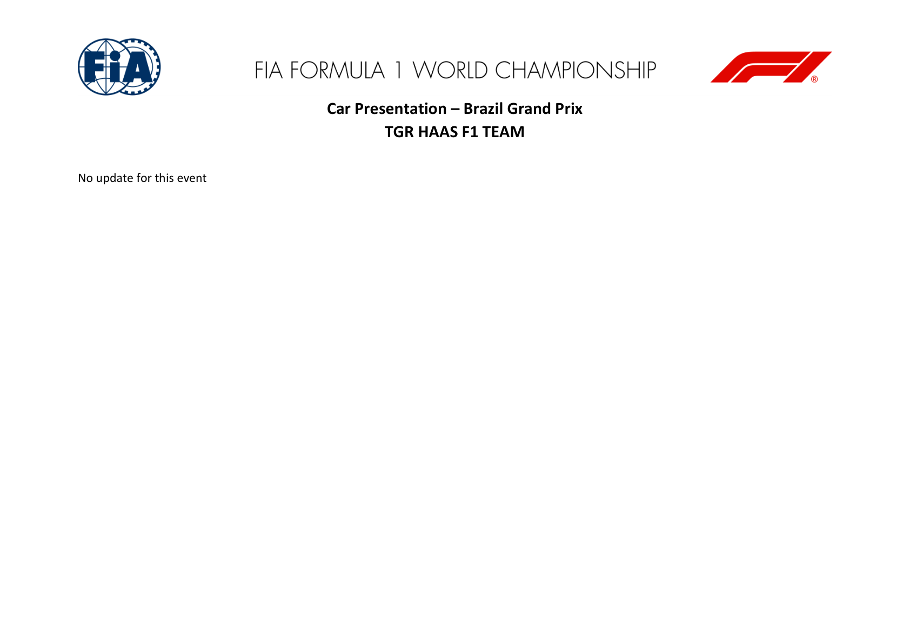
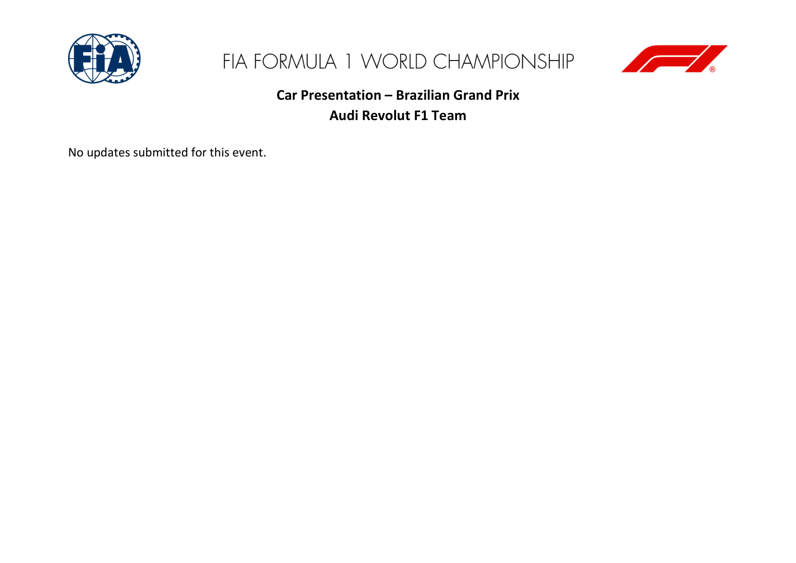
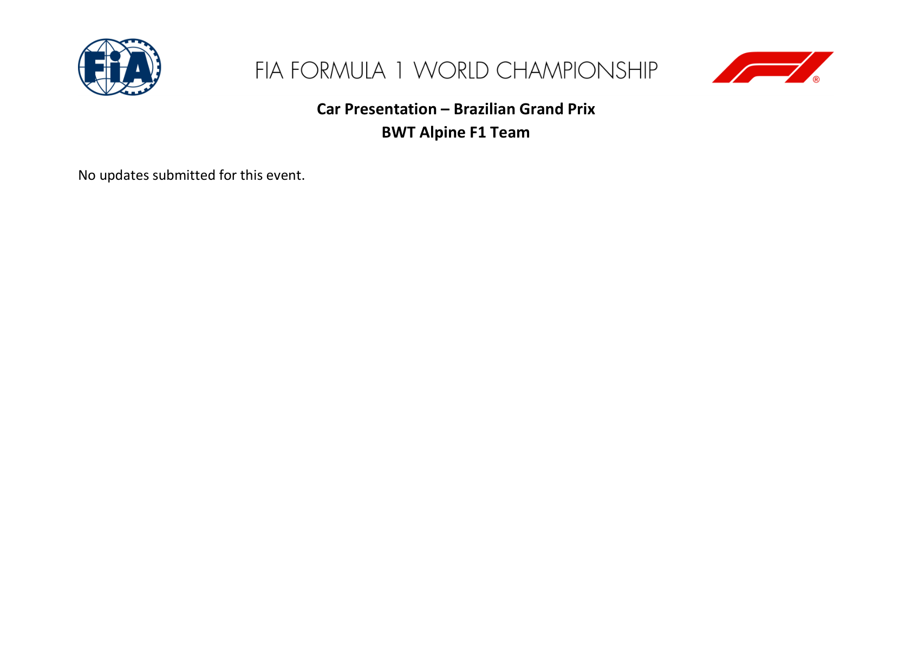
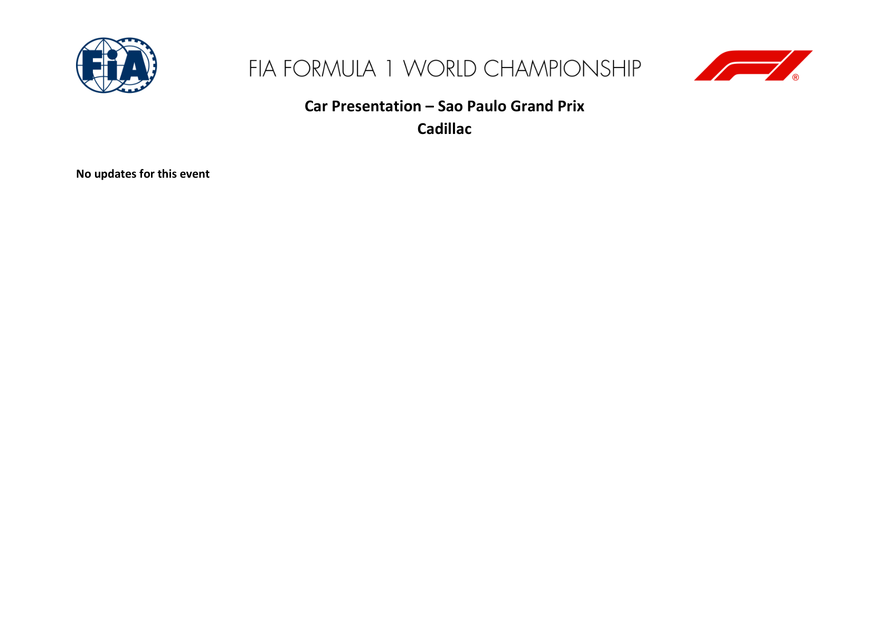
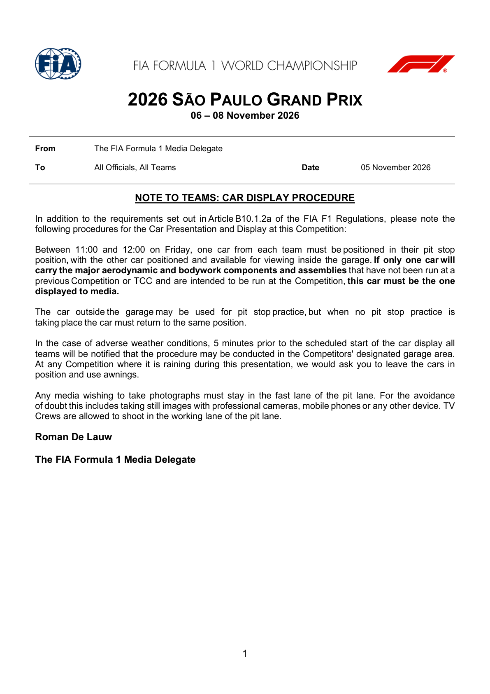

Car Development & Upgrades
Upgrade packages brought to this round, from the FIA's car presentation submissions.
FIA official car-presentation, upgrade & parts-change documents
Official source; curated transcription may await review. Linked PDFs are the authority. Discovery does not extract or verify numeric values, and does not replace the curated material below.
Last successful FIA document discovery: 2026-11-07T12:32:06.095148+00:00. This is retrieval time, not issue time; newer revisions may exist.
- 2026_sao_paulo_grand_prix_-_car_presentation_submissions.pdf (official PDF)
- 2026_sao_paulo_grand_prix_-_car_display_procedure.pdf (official PDF)
Team and grid storylines
Mercedes: constructors' title still in play
Antonelli clinched the Drivers' Championship in Mexico. The latest official standings still show Mercedes leading Ferrari 630–504 (126 points). Formula1.com's pre-weekend scenario says gaining three points on Ferrari in Brazil clinches the constructors' title; practice awards no points, and the title is not yet settled. Official title scenario.
Mercedes: Russell receives a five-place drop
FIA Document 14 reports a new ICE for Russell at the twentieth competition: it is his sixth against four allowed and the Technical Delegate says it is not compliant with Sporting Regulation B8.2.2(a). The Stewards' separate Document 15 now imposes a five-place drop for the next race in which Russell participates. The season-to-date usage report (Document 8) is not an event-specific parts declaration or the penalty decision. FIA Document 14 · FIA Document 15 · Formula1.com report · The Race report. The FIA filings do not establish whether the planned ADUO specification is arriving.
FP1/FP2: FIA lap-time deletions
Stewards' Document 19 deletes the shown FP1 lap times for Franco Colapinto (2:05.129), Alexander Albon (1:32.736), Luke Browning (1:33.848), Rafael Câmara (1:18.760) and Dino Beganovic (OUT LAP) after their cars passed through a double-waved yellow sector. This is a lap-time deletion, not a race penalty or a revised FP1 classification. FIA Document 19 (issued 6 November at 14:00 local).
Document 23 lists ten FP2 lap entries for nine drivers (Albon appears twice) after cars did not use the track at Turns 1 and 4. The listed times are deleted; the decision is not itself a revised FP2 classification or a race penalty. FIA Document 23 · official FP2 classification.
Stewards: Camara receives his first reprimand
FIA Document 25 resolves the Turn 15 summons involving Rafael Camara (Car 51) and Charles Leclerc (Car 16). The Stewards found that Camara unnecessarily impeded Leclerc in FP2 at 16:31; after warnings that Car 16 was on a fast lap, Car 51 moved into the racing line and Leclerc had to take evasive action. The decision is a driving reprimand, Camara's first of the season. It is not a grid drop or a revised FP2 classification. FIA Document 25 · FIA event documents.
Ferrari: Hamilton's Thursday comments
On Thursday 5 November, Hamilton said face-to-face talks with Leclerc about their Mexico battle had not yet taken place. That reports what he said then; it does not establish whether they later spoke or whether team rules changed. Formula1.com's 5 November report.
McLaren: four declared changes, early gain reported by Norris
FIA Document 12 lists four performance-motivated items: front wing, rear wing, beam wing and floor furniture. The team's stated aims concern flow conditioning and local aerodynamic load. After Friday practice, Norris said the package seemed to gain performance; he topped FP1 and finished second in FP2. This is an early driver assessment, not an independently measured race-long gain. The Race reports that the front-wing concept is intended to carry into McLaren's 2027 launch specification. FIA declaration · Formula1.com: Norris on the upgrades · The Race technical report.
Race control: FIA Race Director's Document 24 sets the maximum interval below 1:13.0 between the Safety Car lines during and after Qualifying, and on reconnaissance laps while the pit exit is open for the Race. This is not a racing-lap maximum. FIA Document 24.
Friday display and component submissions
The FIA display window was Friday 11:00–12:00 BRT / 16:00–17:00 Tallinn; it has passed. The procedure says that if just one car has new major components, that is the car to display. Official procedure.
The FIA's Car Display Procedure is separate from the all-team Car Presentation Submissions. Document 12 was published at 15:32 CET on 6 November, after the earlier 14:00 and 14:29 UTC listing checks. Its team-by-team declarations and explicit nil returns are transcribed below; the full substantive PDF pages, including McLaren's location diagram, remain available in the expandable readers.
Source: FIA Document 12, Car Presentation Submissions, issued 6 November 2026, 15:32 CET. All eleven teams are included. Counts refer to declared component rows, not a ranking of performance gains or confirmation that both cars raced every item.
Team-by-team car presentation submissions
Choose Read page to view the team's official declaration here, with its diagram where supplied. The reader supports zoom and keeps the original PDF available as a separate source link.
| Team | Items | Declared areas | FIA source |
|---|---|---|---|
| McLaren | 4 | Front Wing, Rear Wing, Beam Wing, Floor Furniture | Read page 2 |
| Mercedes | 0 | No updates submitted | Read page 4 |
| Red Bull | 0 | No updates submitted | Read page 5 |
| Ferrari | 0 | No updates submitted | Read page 6 |
| Williams | 0 | No updates submitted | Read page 7 |
| Racing Bulls | 0 | No updates submitted | Read page 8 |
| Aston Martin | 0 | No updates submitted | Read page 9 |
| Haas | 0 | No updates submitted | Read page 10 |
| Audi | 0 | No updates submitted | Read page 11 |
| Alpine | 0 | No updates submitted | Read page 12 |
| Cadillac | 0 | No updates submitted | Read page 13 |
What changed and why
The explanations below summarise each team's stated rationale, not independently measured lap-time gains. A nil return means no updates submitted for this event; it does not rule out setup changes or previously introduced parts.
McLaren — 4 declared items
- Front Wing: A new front-wing design aims to improve flow conditioning towards the floor and bodywork. Filed reason: Performance - Flow Conditioning.
- Rear Wing: A new rear-wing assembly is designed to increase aerodynamic load efficiently in all conditions. Filed reason: Performance - Local Load.
- Beam Wing: A new beam wing is intended to improve interaction and flow conditioning with the new rear wing. Filed reason: Performance - Flow Conditioning.
- Floor Furniture: A small floor-furniture modification aims to improve flow conditioning and floor aerodynamic performance. Filed reason: Performance - Flow Conditioning.
View official declaration and diagram


Mercedes — 0 declared items
No updates submitted for this event.
View official declaration
Red Bull — 0 declared items
No updates submitted for this event.
View official declaration
Ferrari — 0 declared items
No updates submitted for this event.
View official declaration

Williams — 0 declared items
No updates submitted for this event.
View official declaration

Racing Bulls — 0 declared items
No updates submitted for this event.
View official declaration
Aston Martin — 0 declared items
No updates submitted for this event.
View official declaration

Haas — 0 declared items
No updates submitted for this event.
View official declaration

Audi — 0 declared items
No updates submitted for this event.
View official declaration

Alpine — 0 declared items
No updates submitted for this event.
View official declaration

Cadillac — 0 declared items
No updates submitted for this event.
View official declaration

Official FIA document screenshots
Automatically rendered from the official PDFs. These figures do not update or verify the curated numeric transcriptions above. Unchanged pages already illustrated above are not repeated here.
2026_sao_paulo_grand_prix_-_car_display_procedure.pdf
PDF retrieved 2026-11-07T12:32:08+00:00; this is not its issue date.
